3 黒木
3/56｜2025/11/22
4E4V8
成绩最好的卡组
最佳卡组：OROCHI｜1/45 (0.0222)｜2025/11/29｜33V1N
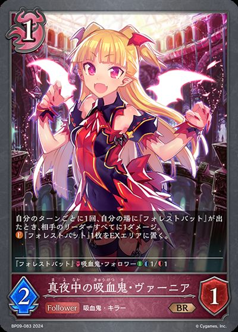
主BP09-083/BP09-P25：真夜中の吸血鬼・ヴァーニア主卡组 × 2 主BP16-085/BP16-P19：怪奇の探索者・ユナ主卡组 × 3
主BP16-085/BP16-P19：怪奇の探索者・ユナ主卡组 × 3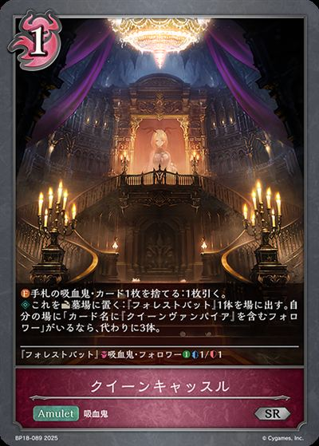
主BP18-089/BP18-P38：女王的城堡主卡组 × 3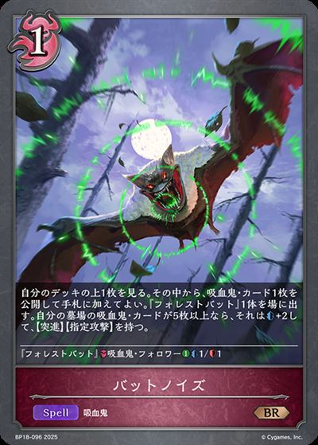
主BP18-096：蝙蝠的鸣噪主卡组 × 3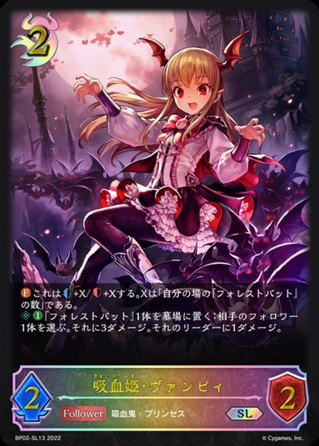
主BP02-069/BP02-SL13/BP02-U05：吸血姫・ヴァンピィ主卡组 × 3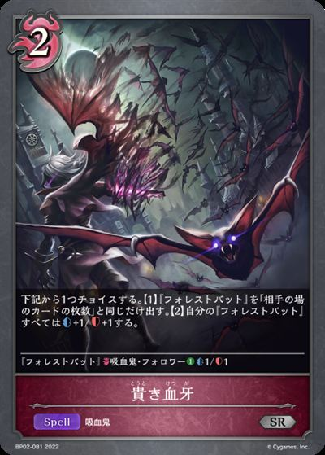
主BP02-081：貴き血牙主卡组 × 3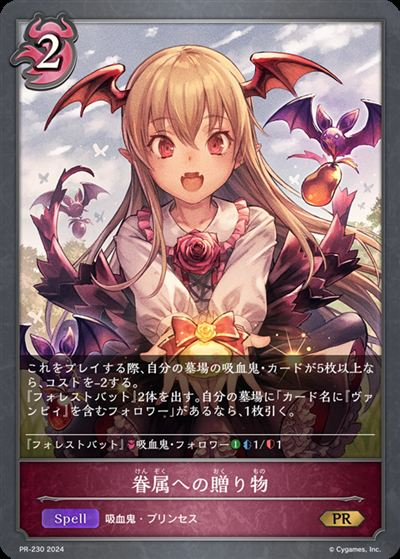
主BP09-075/PR-230：眷属への贈り物主卡组 × 3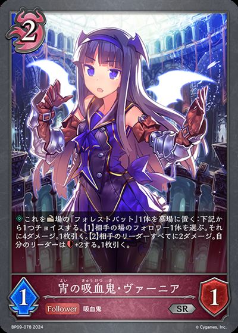
主BP09-078/BP09-P23：宵の吸血鬼・ヴァーニア主卡组 × 3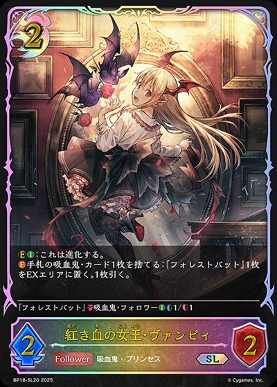
主BP18-080/BP18-SL20/PR-479：赤血女王·班比主卡组 × 3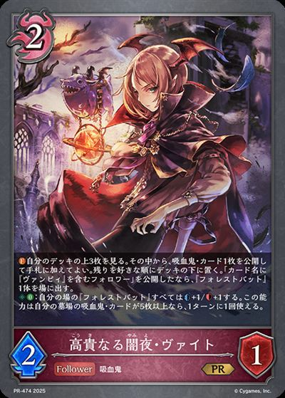
主BP18-084/PR-474：高贵的暗夜·拜特主卡组 × 3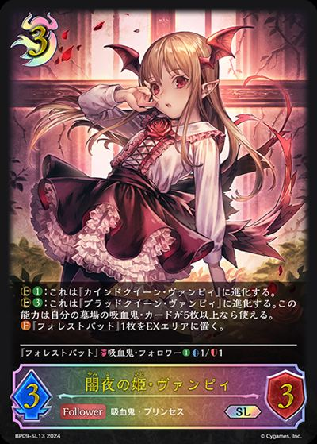
主BP09-069/BP09-SL13：闇夜の姫・ヴァンピィ主卡组 × 3 主BP17-074/BP17-SL18：终幕的吸血鬼·尤利亚斯主卡组 × 3
主BP17-074/BP17-SL18：终幕的吸血鬼·尤利亚斯主卡组 × 3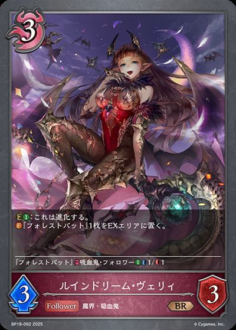
主BP18-092：破灭欲想·维莉主卡组 × 2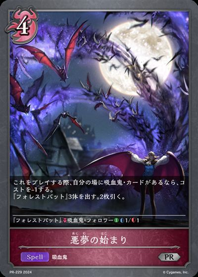
主BP06-083/PR-229：悪夢の始まり主卡组 × 2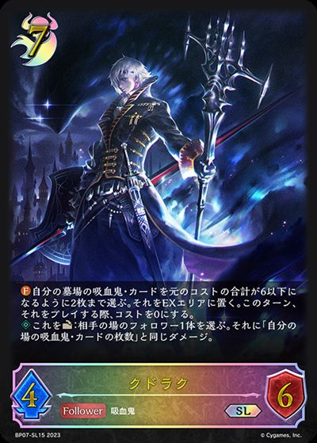
主BP07-071/BP07-SL15：クドラク主卡组 × 1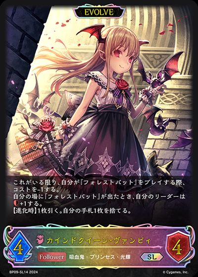
进BP09-070/BP09-SL14：カインドクイーン・ヴァンピィ进化 × 3 进BP17-075/BP17-SL19：终幕的吸血鬼·尤利亚斯进化 × 2
进BP17-075/BP17-SL19：终幕的吸血鬼·尤利亚斯进化 × 2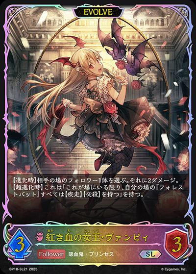
进BP18-081/BP18-SL21/PR-480：赤血女王·班比进化 × 3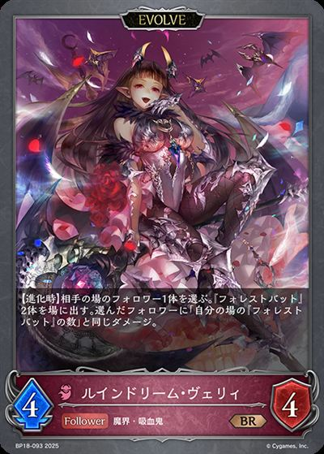
进BP18-093：破灭欲想·维莉进化 × 2其他卡组对比最佳卡组
1 チルル
1/17｜2025/12/29
5MEG2
多了哪些牌
 +3+1+1
+3+1+1少了哪些牌
-2-1-1-1
1 てらばん
1/16｜2025/12/21
4H59S
多了哪些牌
 +3+1
+3+1少了哪些牌
-2-1-1
1 アルパカ
1/16｜2025/12/21
3KUUN
多了哪些牌
+2少了哪些牌
-1-1
1 ダンテ
1/16｜2025/12/07
2UVPA
多了哪些牌
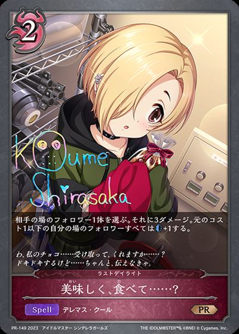
+2 +1+1
+1+1 +1+1
+1+1少了哪些牌
-3-1-1-1
17 かたなし
17/248｜2025/12/06
2J676
多了哪些牌
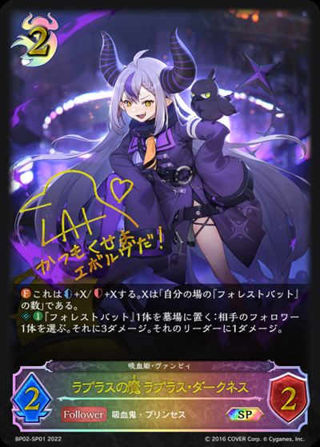
+3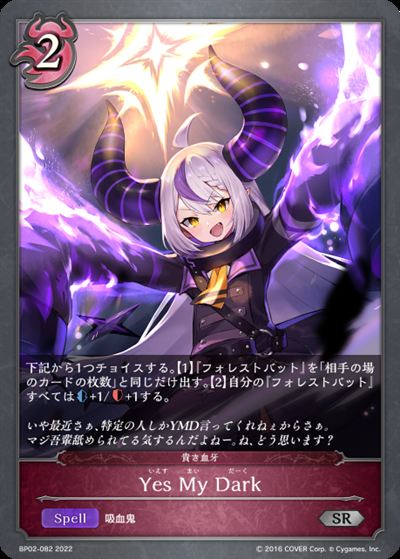
+2+2+1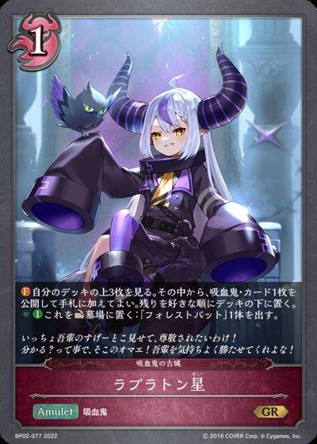
+1+1少了哪些牌
-3-3-2-1-1
1 黒木
1/13｜2025/11/26
4KKXA
多了哪些牌
+1+1少了哪些牌
-1-1
2 ChaosTCG の亡霊
2/24｜2025/11/23
54U0N
多了哪些牌
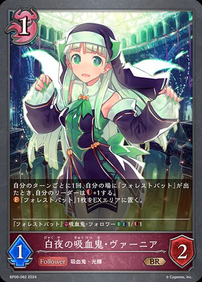
+3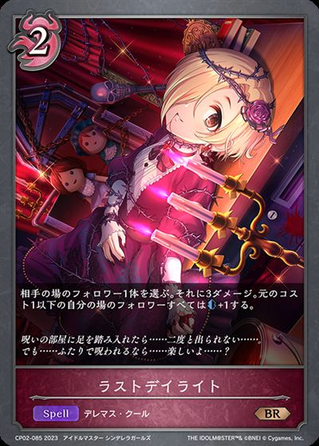
+3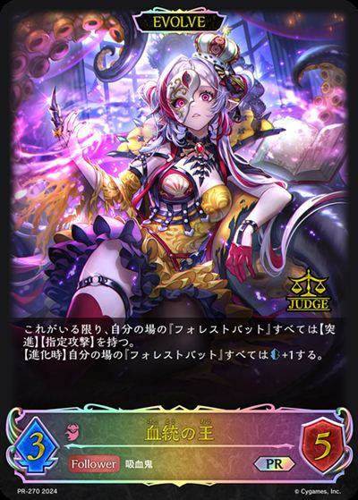
+2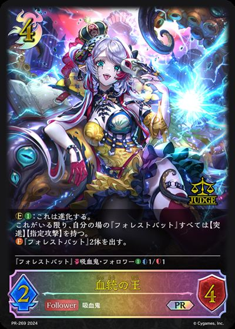
+2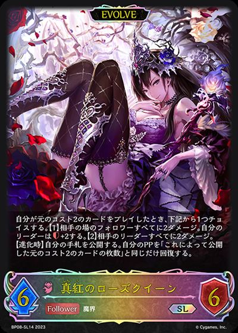
+1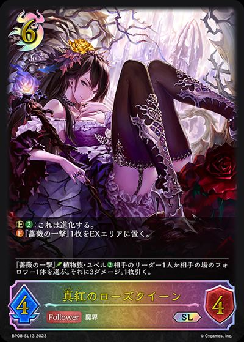
+1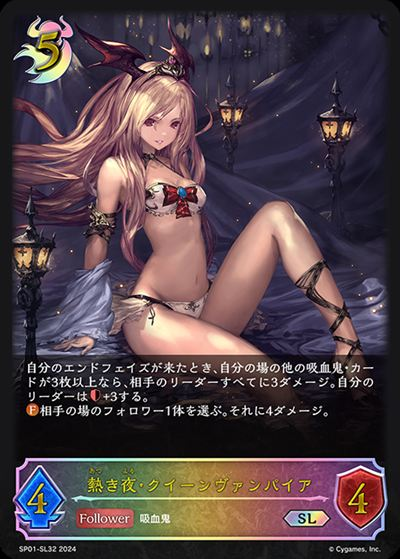
+1少了哪些牌
-3-2-2-2-2-1-1
-2-2-1-1
3 戊辰
3/36｜2025/11/22
28CUJ
多了哪些牌
+3+2+1+1+1+1
+1+1+1少了哪些牌
-3-2-2-1-1
1 みゃち눈_눈
1/11｜2025/12/28
5QM1G
多了哪些牌
+3+2+2
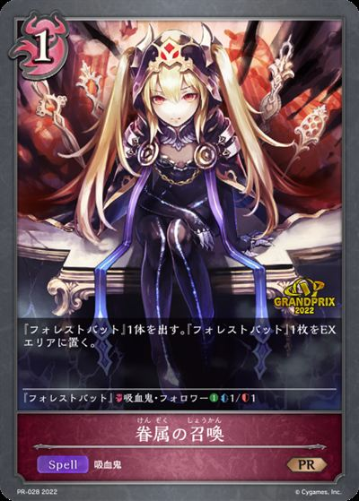
+3+2+2少了哪些牌
-3-2-2-2-1
2 てらばん
2/22｜2026/01/18
4H59S
多了哪些牌
+3+1少了哪些牌
-2-1-1
2 果実農家/かじつのうか
2/20｜2025/11/29
47ANQ
多了哪些牌
+3 +3+3+3+2
+3+3+3+2 +2
+2 +1+1+1
+1+1+1
+3+3+3+2+2+1+1+1少了哪些牌
-3-3-3-3-2-2-2-1
3 チルル
3/28｜2025/11/23
6QV7Q
多了哪些牌
+2+2+1
少了哪些牌
-2-1-1-1
1 黒木
1/9｜2025/12/03
3UZWL
多了哪些牌
+2+1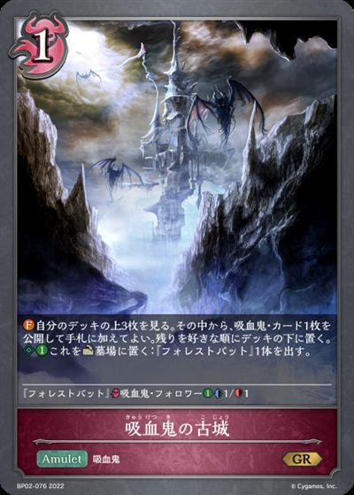
+1少了哪些牌
-2-1-1
2 カナ
2/18｜2025/12/21
5RYWW
多了哪些牌
+1+1
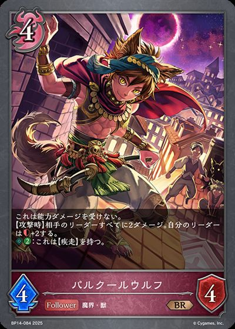
+1+1少了哪些牌
-2-1-1
2 なっつ
2/16｜2025/11/30
3ZVB2
多了哪些牌
+3+3+2+2+1+1+1
+2+2+1+1+1少了哪些牌
-3-3-2-2-1-1-1
-1
1 Swallow
1/7｜2025/11/23
7HDRY
多了哪些牌
+3+3+3+2+1+1
少了哪些牌
-3-3-3-2-2
-3-2-2
3 カズヤ
3/20｜2025/11/29
3WM56
多了哪些牌
+3+2+2+1+1
+2+2+1+1少了哪些牌
-3-2-1-1-1-1
2 ゲルナ
2/13｜2025/11/24
3LN3L
多了哪些牌
+3+3+2+2+1
少了哪些牌
-3-3-2-2-1
2 ダンセル
2/12｜2025/12/06
5H400
多了哪些牌
+3+3
少了哪些牌
-3-2-1
2 せるぷー
2/12｜2025/12/03
18AQ8
多了哪些牌
+3+1+1
+1+1少了哪些牌
-3-1-1
5 戊辰
5/29｜2026/01/10
4H59S
多了哪些牌
+3+1少了哪些牌
-2-1-1
3 炭酸水
3/17｜2026/01/11
4BFTW
多了哪些牌
+2 +2
+2
+2少了哪些牌
-2-1-1
3 mituki
3/17｜2025/11/23
7L1X8
多了哪些牌
 +3+3+2+2+2
+3+3+2+2+2少了哪些牌
-3-2-2-2-2-1
2 しょこらちえ
2/11｜2025/12/14
3VFR6
多了哪些牌
+3+1少了哪些牌
-2-1-1
2 ちゃくらむ
2/11｜2025/11/30
19VPA
多了哪些牌
+2+2+1+1
少了哪些牌
-2-2-1-1
5 タイロン
5/27｜2025/11/24
1L47U
多了哪些牌
+3 +3+3+3
+3+3+3 +3
+3 +2
+2 +2
+2 +2
+2 +1
+1少了哪些牌
-3-3-3-3-2-2-2-2-1-1
1 バニラ
1/5｜2025/12/07
3JLN4
多了哪些牌
+3+2+2+2+1+1少了哪些牌
-3-3-2-1-1-1
3 ホウジチャ
3/15｜2026/01/17
26FLL
多了哪些牌
+2+2
+2少了哪些牌
-2-1-1
3 果実農家/かじつのうか
3/15｜2026/01/11
ZES4
多了哪些牌
+3+3+2+2+1+1+1
+2+2+1+1+1少了哪些牌
-3-3-3-3-1
3 みのすけ
3/15｜2025/11/22
2DFE2
多了哪些牌
+2+2+1+1+1
少了哪些牌
-2-2-1-1-1
5 chome
5/25｜2025/11/21
1J7DQ
多了哪些牌
+3+3少了哪些牌
-3-2-1
7 rokujo_
7/35｜2025/12/07
46BW4
多了哪些牌
+2少了哪些牌
-1-1
5 LGK|ゆう
5/24｜2025/11/22
3C93L
多了哪些牌
+2+2+2+2
少了哪些牌
-2-2-1-1-1-1
2 ぱに
2/9｜2026/01/11
2VBW8
多了哪些牌
+2+1+1+1
+1+1+1少了哪些牌
-2-1-1-1
2 ヤッスン
2/9｜2025/12/13
4GCAL
多了哪些牌
+3+3+2+2+2+1少了哪些牌
-3-2-2-2-2-1-1
4 炭酸水
4/18｜2026/01/19
4BFTW
多了哪些牌
+2+2
+2少了哪些牌
-2-1-1
4 チルル
4/18｜2025/11/24
4FEVC
多了哪些牌
+2+1
少了哪些牌
-2-1
8 rokujo_
8/35｜2025/11/30
54D2Q
多了哪些牌
+1+1+1
少了哪些牌
-2-1
6 ぷーすけ
6/26｜2025/11/28
53G6Y
多了哪些牌
+3+3+2+2+1+1少了哪些牌
-3-2-2-2-2-1
4 わぎゅう
4/17｜2025/11/23
3DCZY
多了哪些牌
+3+2+1+1
+2+1+1少了哪些牌
-2-2-2-1
5 良さみが深すぎて与謝野晶子
5/21｜2026/01/11
2G45E
多了哪些牌
+3+3+2+1
+3+2+1少了哪些牌
-3-3-2-1
2 ゲルナ
2/8｜2025/12/20
4KMKL
多了哪些牌
+3+2+1+1
+1+1少了哪些牌
-3-2-1-1
3 ヤッスン
3/12｜2025/11/22
2MZNA
多了哪些牌
+3+2+1
少了哪些牌
-3-2-1
3 黒木
3/12｜2025/11/22
2PH94
多了哪些牌
+2
少了哪些牌
-2
5 果実農家/かじつのうか
5/20｜2025/11/24
7FAYJ
多了哪些牌
+3+3+3+3+2+2+1
+3+3+2+2+1少了哪些牌
-3-3-3-2-2-2-1-1
6 チルル
6/24｜2025/11/22
2LTMQ
多了哪些牌
+2+2+1
+1少了哪些牌
-2-1-1-1
7 戊辰
7/28｜2026/01/24
4H59S
多了哪些牌
+3+1少了哪些牌
-2-1-1
5 barenn
5/19｜2025/12/12
13MAL
多了哪些牌
+2+1+1+1
少了哪些牌
-3-2
3 かきあげ
3/11｜2025/12/28
6G5Q0
多了哪些牌
+3+3+3+1
少了哪些牌
-3-3-2-1-1
5 ルビ
5/18｜2025/12/27
39BVG
多了哪些牌
+2+1少了哪些牌
-2-1
5 rokujo_
5/18｜2025/12/21
31W26
多了哪些牌
+2+1+1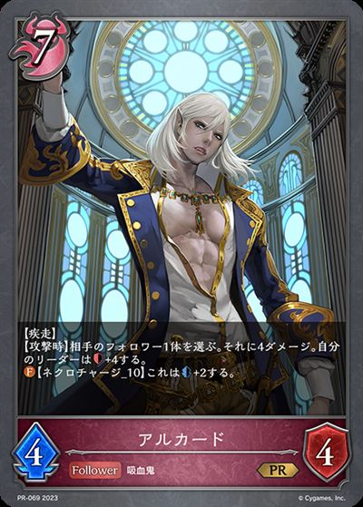
+1少了哪些牌
-2-1-1-1
2 アルパカ
2/7｜2025/12/28
4D3B0
多了哪些牌
+1+1+1少了哪些牌
-1-1-1
2 苺綿飴
2/7｜2025/12/01
XSLL
多了哪些牌
+3+2+1+1+1
+2+1+1+1少了哪些牌
-3-2-1-1-1
4 ガチャンコ
4/14｜2026/01/12
5LR20
多了哪些牌
+3+1+1少了哪些牌
-2-2-1
4 アカツキ
4/14｜2025/12/20
Y046
多了哪些牌
+3+3+2+2+1
少了哪些牌
-3-2-2-2-1-1
5 かきあげ
5/17｜2025/11/23
4AV3G
多了哪些牌
+3+3+3+1
少了哪些牌
-3-3-2-1-1
5 chome
5/17｜2025/11/22
7A0QA
多了哪些牌
+3+3+2+2+2少了哪些牌
-3-2-2-2-2-1
3 はまだ
3/10｜2025/12/20
4H59S
多了哪些牌
+3+1少了哪些牌
-2-1-1
3 ようよう
3/10｜2025/11/24
1VZ1C
多了哪些牌
+3+2+1+1+1+1
+1+1+1少了哪些牌
-2-2-2-1-1-1
3 かたなし
3/10｜2025/11/24
7U1SW
多了哪些牌
+3+3+3+1
少了哪些牌
-3-3-3-1
5 ポナンズクロース
5/16｜2025/12/24
410X4
多了哪些牌
+3+3+3+1
+3+1少了哪些牌
-3-3-2-1-1
8 炭酸水
8/25｜2025/12/29
6NHA2
多了哪些牌
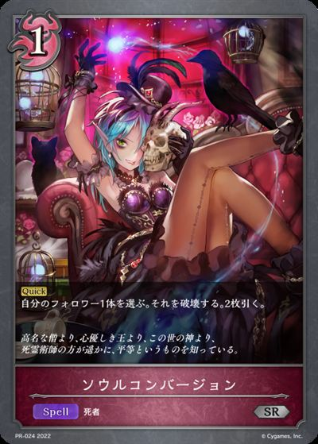
+2+2少了哪些牌
-2-1-1
8 鮭
8/25｜2025/12/21
1T3V2
多了哪些牌
+2+1+1+1
少了哪些牌
-3-2
3 ヨネオ
3/9｜2025/12/27
71CHQ
多了哪些牌
+2+1+1少了哪些牌
-2-1-1
3 YU1
3/9｜2025/12/21
57LEW
多了哪些牌
+2+1+1+1+1
+1+1+1+1少了哪些牌
-3-1-1-1
4 トア
4/12｜2025/11/22
7K13G
多了哪些牌
+2+2+1+1+1+1
少了哪些牌
-2-2-2-1-1
6 ぷーすけ
6/18｜2025/12/04
Z1UE
多了哪些牌
+3+2+2+1
+2+2+1少了哪些牌
-3-2-1-1-1
7 ゴンベLv.5
7/20｜2025/12/14
2ST0C
多了哪些牌
+3+3+2+2+1+1+1+1+1
少了哪些牌
-3-3-2-2-2-1-1-1
7 chome
7/20｜2025/11/24
1U2JE
多了哪些牌
+3+2+2+1+1少了哪些牌
-3-2-2-1-1
6 せるぷー
6/17｜2026/01/11
1JUSU
多了哪些牌
+2+1+1+1+1
少了哪些牌
-3-2-1
4 おにぎりボーイ
4/11｜2025/12/28
7GDX4
多了哪些牌
+1+1
少了哪些牌
-1-1
7 かきあげ
7/19｜2026/01/10
6G5Q0
多了哪些牌
+3+3+3+1
少了哪些牌
-3-3-2-1-1
7 みみお
7/19｜2025/12/20
4P75U
多了哪些牌
+2+2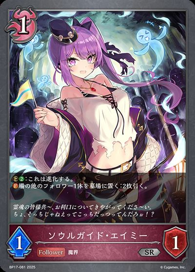
+2+2+1+1+1少了哪些牌
-3-2-2-2-1-1
3 もくん
3/8｜2025/11/30
2UBUC
多了哪些牌
+3+2+1+1+1+1+1
+1+1+1+1+1少了哪些牌
-3-2-2-1-1-1
7 ツバサ
7/18｜2025/12/13
6T85J
多了哪些牌
+3+1
少了哪些牌
-3-1
4 ガブリアスLv.66
4/10｜2025/12/07
5NHAU
多了哪些牌
+3+3+2+2
少了哪些牌
-3-3-2-1-1
6 ダンテ
6/15｜2025/12/13
2UVPA
多了哪些牌
+2+1+1+1+1
+1+1+1+1少了哪些牌
-3-1-1-1
8 プレシア
8/20｜2025/12/14
67NDA
多了哪些牌
+2+2+2+1+1+1少了哪些牌
-2-2-2-1-1-1
-1
8 ようよう
8/20｜2025/11/29
4EN0Y
多了哪些牌
+3+3+3+2+1少了哪些牌
-3-3-2-1-1-1-1
7 かきあげ
7/17｜2025/11/22
2UQBU
多了哪些牌
+3+3+3+3+2
+3+3+2少了哪些牌
-3-3-2-2-2-1-1
-1
5 ねむハム
5/12｜2025/11/22
5JNGJ
多了哪些牌
+3+2+2+2+2+1
+2+2+1少了哪些牌
-3-3-2-2-1-1
-3-2-2-1-1
8 miroku58
8/19｜2025/11/27
1Y8BE
多了哪些牌
 +3
+3 +2+2
+2+2 +1+1+1
+1+1+1少了哪些牌
-3-2-2-2-1
3 斑猫
3/7｜2026/01/24
7XBQW
多了哪些牌
+2+1+1少了哪些牌
-2-1-1
3 アルパカ
3/7｜2025/12/27
4D3B0
多了哪些牌
+1+1+1少了哪些牌
-1-1-1
4 かたなし
4/9｜2026/01/11
13F60
多了哪些牌
+3+3+3+1+1
+3+1+1少了哪些牌
-3-3-2-1-1-1
4 鴉
4/9｜2025/12/27
410X4
多了哪些牌
+3+3+3+1
+3+1少了哪些牌
-3-3-2-1-1
8 うっちー
8/18｜2025/12/04
7NDPW
多了哪些牌
+3+3+1+1
+1+1少了哪些牌
-3-3-1-1
6 tepoG
6/13｜2025/12/17
1ZSNN
多了哪些牌
+2+2+1+1+1
+1+1+1少了哪些牌
-3-2-1-1
7 yさん
7/15｜2026/01/10
2A5Q0
多了哪些牌
+3+2
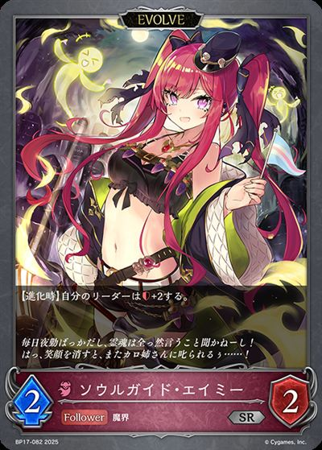
+1+1少了哪些牌
-3-2-1-1
8 くー
8/17｜2025/11/23
2N13U
多了哪些牌
+3+3+2+1+1
少了哪些牌
-3-3-2-1-1
2 クレイ
2/4｜2026/01/11
4DZ4U
多了哪些牌
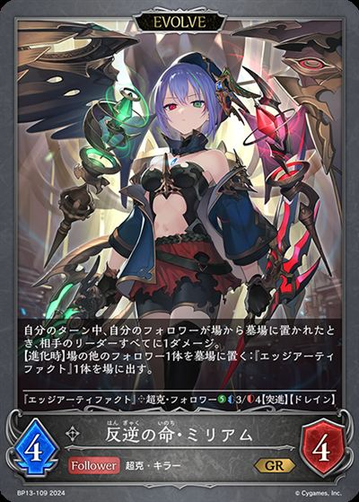
+2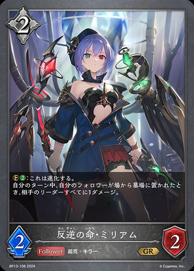
+2+2+1少了哪些牌
-3-2-2
3 安定の青発展
3/6｜2026/01/17
7GDX4
多了哪些牌
+1+1
少了哪些牌
-1-1
3 かきあげ
3/6｜2025/12/13
6G5Q0
多了哪些牌
+3+3+3+1
少了哪些牌
-3-3-2-1-1
3 ありー
3/6｜2025/11/24
4RX50
多了哪些牌
+3+2+1+1+1+1
+1+1+1+1少了哪些牌
-3-2-2-1-1
5 らすく
5/10｜2025/11/24
5FK46
多了哪些牌
+3+1+1
少了哪些牌
-2-2-1
6 かきあげ
6/12｜2026/01/17
5BX4C
多了哪些牌
+3+3+3+1
少了哪些牌
-3-3-2-1-1
6 みみお
6/12｜2025/12/07
7T1NY
多了哪些牌
+3+3+3+2+2+1+1+1
+1+1+1少了哪些牌
-3-3-3-2-2-2-1
7 痛烈！一閃！今日は今日は
7/14｜2026/01/11
7GDX4
多了哪些牌
+1+1
少了哪些牌
-1-1
8 ちゃま
8/15｜2026/01/17
V5KJ
多了哪些牌
+3+2+1少了哪些牌
-2-2-1-1
7 悠
7/13｜2025/12/20
5MKJE
多了哪些牌
+3+3+2+1少了哪些牌
-2-2-2-1-1-1
5 セタ
5/9｜2025/12/06
2YWNG
多了哪些牌
+3+3+3+2+2+2+2+1
+2+2+2+1少了哪些牌
-3-3-3-2-2-2-2-1
-3-2-2-2-2-1
4 もりけん
4/7｜2025/12/21
4S66W
多了哪些牌
+3+1+1+1
少了哪些牌
-3-2-1
8 YU1
8/14｜2026/01/17
24FVS
多了哪些牌
+3+2+1少了哪些牌
-3-2-1
7 かたなし
7/12｜2026/01/24
13F60
多了哪些牌
+3+3+3+1+1
+3+1+1少了哪些牌
-3-3-2-1-1-1
8 かきあげ
8/13｜2025/12/20
6G5Q0
多了哪些牌
+3+3+3+1
少了哪些牌
-3-3-2-1-1
5 tepoG
5/8｜2025/12/09
4JKQ4
多了哪些牌
+2+2+1+1
少了哪些牌
-3-2-1
5 kai_nashi
5/8｜2025/12/09
49Y80
多了哪些牌
+3+3+2+1
少了哪些牌
-3-3-2-1
5 苺綿飴
5/8｜2025/12/02
XSLL
多了哪些牌
+3+2+1+1+1
+2+1+1+1少了哪些牌
-3-2-1-1-1
5 ようよう
5/8｜2025/11/30
1KWTA
多了哪些牌
+3+3+2+1+1少了哪些牌
-3-3-2-1-1
7 智
7/11｜2025/12/28
7RDK8
多了哪些牌
+3 +3
+3 +2+2+2+1
+2+2+2+1
+3+2+2+2+1少了哪些牌
-3-3-2-2-2-1
6 tepoG
6/9｜2025/12/03
41RA8
多了哪些牌
+3+2+2+2+1
少了哪些牌
-3-2-2-2-1
8 アカツキ
8/12｜2025/12/07
4GTHN
多了哪些牌
+2+2+1
少了哪些牌
-3-1-1
8 ティエリア
8/12｜2025/11/22
2AQ66
多了哪些牌
+3+3+2+2+2+2+1
少了哪些牌
-3-3-2-2-2-2-1
7 昭
7/10｜2025/12/21
5EVKY
多了哪些牌
+3+3+2+2+1
+3+2+2+1少了哪些牌
-3-3-2-2-1
5 ぐっさん
5/7｜2025/11/23
2J1U2
多了哪些牌
+3+3+3+2+2+1+1
+3+2+2+1+1少了哪些牌
-3-3-2-2-1-1-1-1-1
-3-2-2-1-1-1-1-1
3 もんど
3/4｜2026/01/11
43WJQ
多了哪些牌
+3+2+2 +2+2
+2+2 +1
+1
+2+2+2+2+1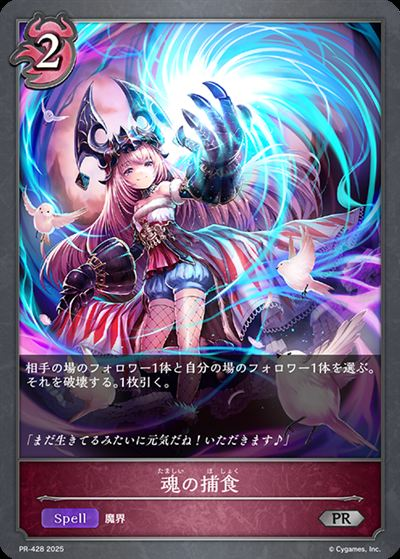
+1少了哪些牌
-3-2-2-2-1-1-1
-1
7 ゲルナ
7/9｜2025/11/29
6VU8Q
多了哪些牌
+3+3+1+1
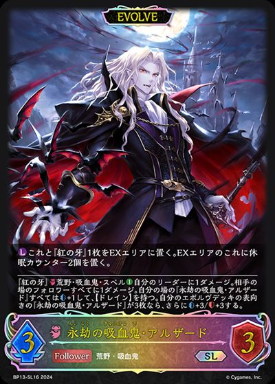
+1+1+1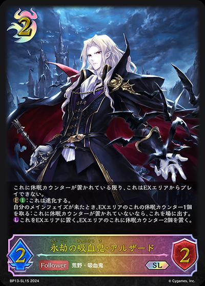
+1少了哪些牌
-3-2-2-2-1
8 バラ
8/10｜2026/01/12
5AV5Y
多了哪些牌
+3+3+2+2+1+1
少了哪些牌
-3-2-2-1-1-1
8 プレシア
8/10｜2025/11/29
67NDA
多了哪些牌
+2+2+2+1+1+1少了哪些牌
-2-2-2-1-1-1
-1
5 もりけん
5/6｜2025/12/10
6SZJY
多了哪些牌
+3+3
少了哪些牌
-2-2-1-1
卡牌使用率
统计范围：该卡组类型下的 122 套卡组记录；同名不同编号合并，主卡组与进化卡组分开统计；3张列包含实际投入3张及以上的记录。
主卡组使用率
| 图片 | 平均张数 | 使用率 | 携带最好成绩 | 不携带最好成绩 | 1张比例 | 2张比例 | 3张比例 |
|---|---|---|---|---|---|---|---|
| 3.00 | 100.0% | 1 1/4533V1N |
无 | 0.0% | 0.0% | 100.0% | |
| 3.00 | 100.0% | 1 1/4533V1N |
无 | 0.0% | 0.0% | 100.0% | |
| 3.00 | 100.0% | 1 1/4533V1N |
无 | 0.0% | 0.0% | 100.0% | |
| 3.00 | 100.0% | 1 1/4533V1N |
无 | 0.0% | 0.0% | 100.0% | |
| 3.00 | 100.0% | 1 1/4533V1N |
无 | 0.0% | 0.0% | 100.0% | |
|
2.96 | 99.2% | 1 1/4533V1N |
8 8/122AQ66 |
0.8% | 0.0% | 98.4% |
| 2.79 | 96.7% | 1 1/4533V1N |
2 2/2047ANQ |
0.8% | 9.8% | 86.1% | |
|
2.81 | 95.1% | 1 1/4533V1N |
1 1/77HDRY |
0.0% | 4.1% | 91.0% |
| 2.30 | 82.8% | 1 1/4533V1N |
2 2/2047ANQ |
0.8% | 16.4% | 65.6% | |
| 2.19 | 74.6% | 1 1/4533V1N |
17 17/2482J676 |
0.8% | 3.3% | 70.5% | |
| 1.89 | 72.1% | 1 1/4533V1N |
2 2/2454U0N |
0.8% | 26.2% | 45.1% | |
| 1.58 | 72.1% | 1 1/4533V1N |
2 2/2454U0N |
0.8% | 56.6% | 14.8% | |
| 1.35 | 50.8% | 1 1/4533V1N |
1 1/162UVPA |
4.9% | 7.4% | 38.5% | |
| 0.88 | 45.1% | 1 1/4533V1N |
1 1/175MEG2 |
13.9% | 19.7% | 11.5% | |
| 0.98 | 36.9% | 17 17/2482J676 |
1 1/4533V1N |
1.6% | 9.0% | 26.2% | |
| 0.70 | 30.3% | 2 2/2454U0N |
1 1/4533V1N |
5.7% | 9.0% | 15.6% | |
| 0.54 | 19.7% | 17 17/2482J676 |
1 1/4533V1N |
2.5% | 0.0% | 17.2% | |
| 0.43 | 19.7% | 1 1/162UVPA |
1 1/4533V1N |
4.1% | 7.4% | 8.2% | |
| 0.42 | 18.9% | 2 2/2454U0N |
1 1/4533V1N |
1.6% | 11.5% | 5.7% | |
| 0.42 | 17.2% | 1 1/115QM1G |
1 1/4533V1N |
0.8% | 8.2% | 8.2% | |
|
0.34 | 17.2% | 1 1/162UVPA |
1 1/4533V1N |
4.9% | 7.4% | 4.9% |
|
0.39 | 15.6% | 1 1/164H59S |
1 1/4533V1N |
0.0% | 7.4% | 8.2% |
| 0.24 | 15.6% | 2 2/2454U0N |
1 1/4533V1N |
7.4% | 8.2% | 0.0% | |
| 0.37 | 14.8% | 2 2/2454U0N |
1 1/4533V1N |
0.8% | 5.7% | 8.2% | |
|
0.26 | 12.3% | 1 1/175MEG2 |
1 1/4533V1N |
3.3% | 4.1% | 4.9% |
| 0.13 | 9.0% | 1 1/4533V1N |
1 1/175MEG2 |
4.9% | 4.1% | 0.0% | |
| 0.12 | 8.2% | 1 1/93UZWL |
1 1/4533V1N |
4.9% | 2.5% | 0.8% | |
|
0.14 | 5.7% | 2 2/2047ANQ |
1 1/4533V1N |
0.8% | 1.6% | 3.3% |
|
0.11 | 5.7% | 2 2/2047ANQ |
1 1/4533V1N |
0.8% | 4.1% | 0.8% |
| 0.08 | 4.9% | 2 2/185RYWW |
1 1/4533V1N |
1.6% | 3.3% | 0.0% | |
|
0.12 | 4.1% | 3 3/177L1X8 |
1 1/4533V1N |
0.0% | 0.0% | 4.1% |
|
0.09 | 3.3% | 5 5/271L47U |
1 1/4533V1N |
0.0% | 0.8% | 2.5% |
| 0.04 | 3.3% | 2 2/2454U0N |
1 1/4533V1N |
2.5% | 0.8% | 0.0% | |
| 0.06 | 2.5% | 7 7/194P75U |
1 1/4533V1N |
0.0% | 1.6% | 0.8% | |
|
0.05 | 2.5% | 3 3/174BFTW |
1 1/4533V1N |
0.0% | 2.5% | 0.0% |
| 0.02 | 1.6% | 8 8/256NHA2 |
1 1/4533V1N |
0.8% | 0.8% | 0.0% | |
|
0.02 | 1.6% | 5 5/271L47U |
1 1/4533V1N |
0.8% | 0.8% | 0.0% |
|
0.02 | 0.8% | 5 5/271L47U |
1 1/4533V1N |
0.0% | 0.0% | 0.8% |
|
0.02 | 0.8% | 8 8/191Y8BE |
1 1/4533V1N |
0.0% | 0.0% | 0.8% |
|
0.02 | 0.8% | 7 7/117RDK8 |
1 1/4533V1N |
0.0% | 0.0% | 0.8% |
|
0.02 | 0.8% | 8 8/191Y8BE |
1 1/4533V1N |
0.0% | 0.8% | 0.0% |
| 0.02 | 0.8% | 2 2/44DZ4U |
1 1/4533V1N |
0.0% | 0.8% | 0.0% | |
|
0.02 | 0.8% | 3 3/443WJQ |
1 1/4533V1N |
0.0% | 0.8% | 0.0% |
|
0.02 | 0.8% | 5 5/271L47U |
1 1/4533V1N |
0.0% | 0.8% | 0.0% |
| 0.01 | 0.8% | 17 17/2482J676 |
1 1/4533V1N |
0.8% | 0.0% | 0.0% | |
| 0.01 | 0.8% | 7 7/96VU8Q |
1 1/4533V1N |
0.8% | 0.0% | 0.0% | |
| 0.01 | 0.8% | 5 5/1831W26 |
1 1/4533V1N |
0.8% | 0.0% | 0.0% | |
| 0.01 | 0.8% | 3 3/443WJQ |
1 1/4533V1N |
0.8% | 0.0% | 0.0% |
进化卡组使用率
| 图片 | 平均张数 | 使用率 | 携带最好成绩 | 不携带最好成绩 | 1张比例 | 2张比例 | 3张比例 |
|---|---|---|---|---|---|---|---|
| 2.95 | 100.0% | 1 1/4533V1N |
无 | 0.0% | 4.9% | 95.1% | |
| 2.79 | 100.0% | 1 1/4533V1N |
无 | 0.0% | 21.3% | 78.7% | |
|
2.16 | 95.1% | 1 1/4533V1N |
1 1/77HDRY |
0.0% | 69.7% | 25.4% |
| 1.29 | 73.0% | 1 1/4533V1N |
2 2/2454U0N |
17.2% | 55.7% | 0.0% | |
| 0.32 | 18.9% | 2 2/2454U0N |
1 1/4533V1N |
6.6% | 11.5% | 0.8% | |
|
0.25 | 17.2% | 1 1/162UVPA |
1 1/4533V1N |
9.8% | 7.4% | 0.0% |
|
0.08 | 5.7% | 2 2/2047ANQ |
1 1/4533V1N |
3.3% | 2.5% | 0.0% |
|
0.06 | 3.3% | 5 5/271L47U |
1 1/4533V1N |
0.8% | 2.5% | 0.0% |
| 0.04 | 3.3% | 2 2/2454U0N |
1 1/4533V1N |
2.5% | 0.8% | 0.0% | |
| 0.02 | 0.8% | 2 2/44DZ4U |
1 1/4533V1N |
0.0% | 0.8% | 0.0% | |
|
0.02 | 0.8% | 7 7/117RDK8 |
1 1/4533V1N |
0.0% | 0.8% | 0.0% |
|
0.01 | 0.8% | 8 8/191Y8BE |
1 1/4533V1N |
0.8% | 0.0% | 0.0% |
| 0.01 | 0.8% | 7 7/96VU8Q |
1 1/4533V1N |
0.8% | 0.0% | 0.0% | |
|
0.01 | 0.8% | 3 3/443WJQ |
1 1/4533V1N |
0.8% | 0.0% | 0.0% |
|
0.01 | 0.8% | 5 5/271L47U |
1 1/4533V1N |
0.8% | 0.0% | 0.0% |
| 0.01 | 0.8% | 7 7/152A5Q0 |
1 1/4533V1N |
0.8% | 0.0% | 0.0% |